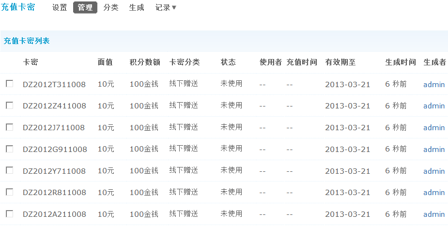
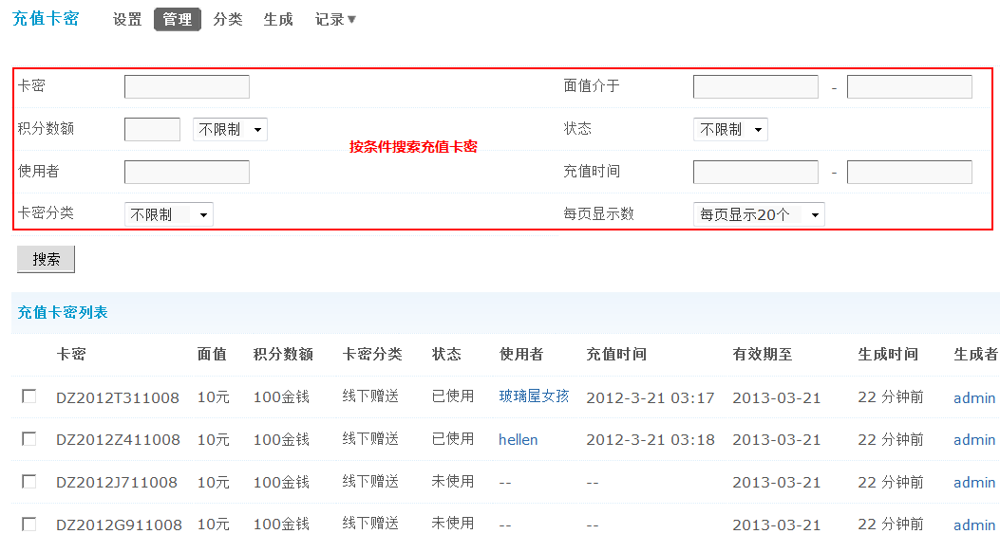

8.4. 充值卡密¶
充值卡密
充值卡密功能对于与线下业务结合较为紧密的站点是非常实用的，不仅有效吸引线下用户成为线上忠实用户，更充分提升了社区积分的价值，建议将此功能与会员经常充值的积分结合使用，效果最佳。
- 注意：为避免运营上出现不必要的问题，建议寻找合适的合作伙伴
- 为避免被假冒卡密充斥市场，建议发售渠道拥有电脑，可以直接在线充值成功
场景一： 当您网站的销售员在做线下业务，谈成之后，送上一张制作精美的五十、一百元面值的充值卡，商家不仅非常高兴与您合作，更有可能成为您网站的忠实用户哦！
场景二： 当您网站在发展线上商家时，如发现该客户不太好搞定，则可考虑送其充值卡，让他通过积分消费体验到拥有站内积分的优越感，搞定客户就会变得更加容易
场景三： 和老会员一起聚餐、参加活动的时候，可以赠送论坛积分卡，让网友拿到“实实在在”的奖励
功能使用：
一、开启充值卡密功能
操作路径：【后台】=>【运营】=>【充值卡密】
允许前台充值：选择“是”会员得到充值卡密后，将可以在前台进行充值，如下图所示：

输入充值卡密以及验证码即可充值成功，充值卡密验证码开关：全局=>防灌水设置=>验证码设置
二、创建分类
比如有些是线上销售的，有些是线下赠送的，划分清楚更方便以后的筛选和管理。
直接点击“新增”可以同时建立同个分类。
三、生成充值卡密
建议生成的卡密位数长一些，一次不要生成太多，不然，简短的卡密规则不仅不能生成巨量卡密也更容易被猜破。
卡密生成规则：”@”代表任意随机英文字符，”#”代表任意随机数字，”*”代表任意英文或数字。
注意：1、规则位数过小会造成卡密生成重复概率增大，过多的重复卡密会造成卡密生成终止。 2、卡密规则中不能带有中文及其他特殊符号。 3、为了避免卡密重复，随机位数最好不要少于8位。
卡密分类：可以选择一个分类，用于区别不同的卡密作用等，方便管理。
生成张数：填写本次共生成多少张卡密。
积分数额及类型：设置本次生成充值卡密可充得的积分数额与类型，如金钱、威望等。
实际面值：实际面值常用在卡片印刷，用作告知用户面值以衡量卡密价值。
有效期至：默认有效期为一年，卡密会在设定时间的24:00失效，状态变更为“已过期”。
备注：为本次生成的卡密添加备注说明，备注将显示在“生成记录”中。
生成的卡密：
您也可以导出充值卡密，最多支持 10000 条数据，导出的 .xls 文件可用 EXCEL 等工具打开。
四、卡密管理
在此可以对已经生成的卡密进行筛选和管理，以及批量导出当前筛选出的充值卡，也可以追踪是谁在什么时间生成的卡密，在什么时间被什么人用来充值了。
五、卡密记录
包括了卡密的生成记录、删除记录和过期记录。
1、生成记录
这里可以查看生成卡密的时间、是谁生成的，卡密规则、成功数和失败数以及操作备注信息，让站长详细了解全站的卡密生成情况。
2、删除记录
可以查看删除卡密的时间、是谁删除的以及删除的卡密数量。
3、过期记录
记录所有过期的卡密详情。